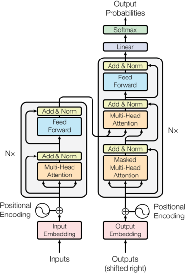
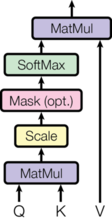
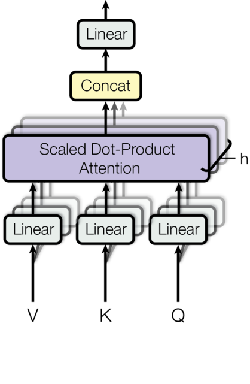

0. 为什么从原始 Transformer 开始
今天几乎所有大语言模型都建立在 Transformer（Vaswani et al., 2017, Attention Is All You Need）之上。但过去几年里，它的每一个部件几乎都被替换或改造过：位置编码、注意力、归一化、前馈网络、残差连接，都有了一长串变体。
要看懂这些变体，先要清楚基础版本是什么样子：每个部件原本是怎么设计的、为什么这样设计、哪里不够好。变体几乎都是针对基础版本的某个具体缺陷提出的。
这一篇就做这件事：按数据流经模型的顺序，把 2017 年原始 Transformer 的每个部件拆开，给出原始公式、设计理由和已知局限，并标注后续哪一篇讨论它的变体。最后给出原始的训练方法、推理方法和一份完整的 PyTorch 实现。之后的每一篇，都以这里的基础版本为起点。
1. 整体结构
原始 Transformer 是一个用于机器翻译的 Encoder-Decoder（编码器-解码器）模型：输入一句英文，输出一句德文。

读图的顺序：左下方的源序列经过嵌入（Input Embedding）、加上位置编码（Positional Encoding），进入 $N$ 个编码器 block，每个 block 是"多头注意力 → Add & Norm → 前馈网络 → Add & Norm"。右下方的目标序列右移一位（Outputs, shifted right）后同样经过嵌入和位置编码，进入 $N$ 个解码器 block，每个 block 多了一个中间的多头注意力，它的 K、V 来自编码器输出（图中从左侧引过来的箭头）。最后经过线性层（Linear）和 Softmax 得到输出概率。每个 "Add & Norm" 旁边绕过子层的箭头就是残差连接。
原论文的两个配置：
| 超参数 | 记号 | Base | Big |
|---|---|---|---|
| 层数（编码器、解码器各） | $N$ | 6 | 6 |
| 隐藏维度 | $d_{\text{model}}$ | 512 | 1024 |
| 注意力头数 | $h$ | 8 | 16 |
| 每个头的维度 | $d_k = d_v = d_{\text{model}}/h$ | 64 | 64 |
| FFN 中间维度 | $d_{\text{ff}}$ | 2048 | 4096 |
| Dropout | $P_{\text{drop}}$ | 0.1 | 0.3 |
| 参数量 | 65M | 213M |
下文记批大小为 $B$，序列长度为 $L$，词表大小为 $V$，$d = d_{\text{model}}$。
2. 每个部件的基础版本
2.1 分词器
做什么. 把文本切成 token，映射成整数 id。分词器不是神经网络的一部分，不参与梯度训练，但它决定了模型"看到"的基本单位，也决定了词表大小 $V$，进而决定嵌入层和输出层的形状。
原始做法. 英德翻译使用 BPE（Byte Pair Encoding，Sennrich et al., 2016），源语言和目标语言共享一个约 37000 个 token 的词表；英法翻译使用 32000 个 token 的 word-piece 词表。
为什么用子词. 切分粒度有三种选择：
| 粒度 | 例子 | 优点 | 缺点 |
|---|---|---|---|
| 按词 | tokenization → [tokenization] |
序列短，每个 token 语义完整 | 词表巨大，没见过的词只能映射成 <unk>（OOV 问题）；run、runs、running 互不相关 |
| 按字符 | tokenization → [t, o, k, …] |
词表极小，没有 OOV | 序列长好几倍，注意力成本按平方增长；单个字符几乎没有语义 |
| 子词 | tokenization → [token, ization] |
常见词完整、罕见词拆成可复用片段，没有 OOV | 切分边界不一定符合语言学 |
子词是两者的折中：高频词是一个 token，序列不会太长；罕见词被拆成见过的片段；词缀（ization、ing、un）成为独立 token，形态规律可以在不同词之间共享。源语言和目标语言共享词表，才能共享嵌入矩阵（见 2.2）。
BPE 的训练算法.
- 把语料切成词，统计每个词的频次；每个词拆成字符序列，词尾加结束标记
</w>（用来区分词中的st和词尾的st）； - 初始词表 = 所有出现过的字符；
- 统计所有相邻符号对在语料中出现的总次数，把次数最多的一对合并成一个新符号，加入词表，并记录这条合并规则；
- 在语料中把这一对全部替换成新符号；
- 重复第 3、4 步，直到词表达到目标大小。
产出两样东西：词表和有序的合并规则列表。
手算一个例子. 语料中有四个词：
| 词 | 频次 | 初始切分 |
|---|---|---|
| low | 5 | l o w </w> |
| lower | 2 | l o w e r </w> |
| newest | 6 | n e w e s t </w> |
| widest | 3 | w i d e s t </w> |
相邻对的次数是它所在词的频次之和：e s、s t、t </w> 都是 6 + 3 = 9 次，w e 是 2 + 6 = 8 次，l o、o w 是 5 + 2 = 7 次。依次合并：
| 第几次 | 合并 | 次数 | 合并后 |
|---|---|---|---|
| 1 | e s → es |
9 | newest = n e w es t </w> |
| 2 | es t → est |
9 | newest = n e w est </w> |
| 3 | est </w> → est</w> |
9 | newest = n e w est</w> |
| 4 | l o → lo |
7 | lower = lo w e r </w> |
| 5 | lo w → low |
7 | lower = low e r </w> |
（第 1 次有三对并列 9 次，实现中按确定规则打破平局，这里取先出现的。）算法自动发现了最高级后缀 est 和词根 low。
编码. 对一个新词，拆成字符后按训练时学到的顺序应用合并规则。没见过的 lowest：l o w e s t </w> → l o w es t </w> → l o w est </w> → l o w est</w> → lo w est</w> → low est</w>，得到 ["low", "est</w>"]。虽然它不在训练语料里，仍被拆成了两个有意义的片段。
from collections import Counter
def get_pair_counts(vocab):
pairs = Counter()
for word, freq in vocab.items():
for a, b in zip(word, word[1:]):
pairs[(a, b)] += freq
return pairs
def merge_pair(pair, vocab):
a, b = pair
new_vocab = {}
for word, freq in vocab.items():
out, i = [], 0
while i < len(word):
if i < len(word) - 1 and word[i] == a and word[i + 1] == b:
out.append(a + b)
i += 2
else:
out.append(word[i])
i += 1
new_vocab[tuple(out)] = freq
return new_vocab
def train_bpe(word_freqs, num_merges):
vocab = {tuple(w) + ('</w>',): f for w, f in word_freqs.items()}
merges = []
for _ in range(num_merges):
pairs = get_pair_counts(vocab)
if not pairs:
break
best, count = pairs.most_common(1)[0]
if count < 2:
break
vocab = merge_pair(best, vocab)
merges.append(best)
return merges
def encode_word(word, merges):
symbols = list(word) + ['</w>']
for pair in merges: # 按学到的顺序应用
symbols = list(merge_pair(pair, {tuple(symbols): 1}).keys())[0]
return list(symbols)
merges = train_bpe({'low': 5, 'lower': 2, 'newest': 6, 'widest': 3}, num_merges=10)
print(merges[:5]) # [('e','s'), ('es','t'), ('est','</w>'), ('l','o'), ('lo','w')]
print(encode_word('lowest', merges)) # ['low', 'est</w>']
局限与后来的做法. 分词器不属于网络结构，本系列不再单独展开，这里把与架构相关的几点交代清楚：
- 字节级 BPE：以字符为初始词表，遇到没见过的字符（罕见文字、emoji）仍会 OOV。GPT-2 改为先把文本按 UTF-8 编码成字节，以 256 个字节为初始词表做 BPE，任何字符串都能编码。GPT-2 的词表大小 50257 = 256 个字节 + 50000 次合并 + 1 个
<|endoftext|>。代价是一个汉字占 3 个字节，中文语料不足时一个汉字可能要 2 到 3 个 token； - 预分词：BPE 之前先用正则把文本切成单词、数字、标点、空白等块，合并只在块内进行，避免学出
dog.、dog!这类跨边界的 token。GPT-2 的空格并入后面的词，所以Hello和Hello是不同的 token； - 词表大小：$V$ 越大，同样的文本 token 越少，注意力越省；但嵌入层和输出层各有 $V\times d$ 个参数，输出层每个 token 要算 $V$ 个分数（见 2.2）。早期模型多用 3 万到 5 万，现在常见 10 万到 25 万。模型越大，嵌入层的参数占比越小，大词表越划算；
- 可见后果：模型看到的是 token id 而不是字母，所以"strawberry 里有几个 r"这类拼写任务容易出错；数字怎么切分也会影响算术能力，很多分词器因此把数字逐位或最多三位一组切分。
输出形状：$[B, L]$ 的整数张量。
2.2 Token Embedding 与输出层
做什么. 嵌入层把 token id 变成向量，是模型的入口；输出层把最后的隐藏向量变回词表上的分数（logits），是模型的出口。
原始做法. 嵌入矩阵 $E\in\mathbb R^{V\times d}$，查表得到向量后乘以 $\sqrt{d}$：
$$ x_t = \sqrt{d}\cdot E[\text{token}_t] $$
输出层是一个线性变换加 softmax：
$$ z_t = h_t E^\top,\qquad p(y_{t+1}\mid\cdot) = \mathrm{softmax}(z_t) $$
原论文让编码器嵌入、解码器嵌入和输出层三者共享同一个矩阵 $E$（weight tying）。
查表就是乘以 one-hot. 把 token $i$ 写成 one-hot 行向量 $e_i\in\{0,1\}^{1\times V}$，则 $e_iE = E[i]$。所以嵌入层在数学上是一个没有偏置、输入为 one-hot 的线性层。实现时直接按索引取行，几乎不消耗计算，成本在存储和访存上。由此可以推出它的梯度是稀疏的：
$$ \frac{\partial\mathcal L}{\partial E} = \sum_t e_{i_t}^\top\frac{\partial\mathcal L}{\partial x_t} $$
只有这个批次中出现过的 token 对应的行收到梯度，罕见 token 很少被更新。
为什么不直接把 one-hot 送进网络？一是维度 $V$ 太大，后续每层的权重都要乘这个维度；二是任意两个 one-hot 向量正交、距离相同，无法表示语义相似。稠密嵌入把相似的 token 放在相近的位置，在一个 token 上学到的东西可以泛化到相似的 token 上。
输出层与交叉熵的梯度. $z_{t,i} = w_i^\top h_t$，即隐藏向量与 token $i$ 的输出向量 $w_i$ 的内积：对齐得越好，该 token 概率越高。训练目标是正确 token $y$ 的负对数概率 $\mathcal L = -z_y + \log\sum_j\exp(z_j)$，对 logits 求导得
$$ \frac{\partial\mathcal L}{\partial z_i} = p_i - \mathbb 1[i = y],\qquad \nabla_z\mathcal L = p - e_y $$
即预测分布减去 one-hot 目标：正确 token 的 logit 被往上推，其他 token 的 logit 按各自的预测概率被往下压。输出层每一行在每一步都收到梯度，是稠密的，这与嵌入层正好相反。
为什么共享权重.
- 省参数：少一个 $V\times d$ 的矩阵。Base 模型三处共享，省下 $2Vd$ 个参数，约 3800 万，比全部参数的一半还多；
- 语义空间一致：共享后 $z_{t,i} = E[i]^\top h_t$，下一个 token 的分数就是隐藏向量与它的输入嵌入的内积。"语义相近的 token 输入向量相近"直接变成"语义相近的 token 输出得分相近"；
- 罕见 token 学得更好：嵌入的梯度稀疏、输出层的梯度稠密，共享之后每个 token 的向量在每一步都能通过输出端得到训练信号（Press & Wolf, 2017）。
为什么乘以 $\sqrt d$. 常见初始化让嵌入元素的方差约为 $1/d$，每个分量约为 $1/\sqrt d$ 的量级；而接下来要加的正弦位置编码每个分量在 $[-1,1]$。直接相加，位置信息会盖过内容信息。乘以 $\sqrt d$ 让嵌入分量回到 $O(1)$ 的量级，与位置编码相当。
局限与后来的做法.
- 共享的代价：输入嵌入要表达"这个 token 是什么"，输出向量要表达"什么上下文之后会出现它"，两者相关但不相同，共享限制了自由度。经验上小模型多数共享，大模型多数不共享：小模型中嵌入参数占比高，共享很划算；大模型中占比小，解除共享换来的自由度更有价值。例如 GPT-2、Qwen2 的 0.5B 和 1.5B 共享，Llama 2、Llama 3 不共享；但 Gemma 系列各尺寸都共享，所以这不是绝对规律；
- $\sqrt d$ 缩放：现代模型大多用 RoPE，位置信息不再加在嵌入上，这个缩放的原始动机消失了，Llama 等不再乘 $\sqrt d$。Gemma 保留了它，是为了配合自己的初始化和归一化方案；
- 大词表的成本：嵌入层和输出层各有 $Vd$ 个参数（按公开配置估算）：
| 模型 | $V$ | $d$ | 是否共享 | 嵌入 + 输出层参数 | 占总参数 |
|---|---|---|---|---|---|
| GPT-2 small | 50257 | 768 | 共享 | 约 39M | 约 31% |
| Qwen2-0.5B | 151936 | 896 | 共享 | 约 136M | 约 28% |
| Llama 2 7B | 32000 | 4096 | 不共享 | 约 262M | 约 4% |
| Llama 3 8B | 128256 | 4096 | 不共享 | 约 1.05B | 约 13% |
输出层每个 token 要做约 $2Vd$ 次浮点运算，Llama 3 8B 中约占每 token 前向计算的 6.6%。MoE 模型中这一点更明显：专家是稀疏激活的，输出层却是稠密的，每个 token 都要算完整个词表。
输出形状：$[B, L, d]$。
2.3 位置编码：正弦函数
做什么. 注意力本身不知道 token 的顺序（见 2.4 末尾），必须显式注入位置信息。
原始做法. 使用固定的正弦函数，加到嵌入上：
$$ PE_{(pos,\,2i)} = \sin\!\left(\frac{pos}{10000^{2i/d}}\right),\qquad PE_{(pos,\,2i+1)} = \cos\!\left(\frac{pos}{10000^{2i/d}}\right) $$
$$ h^{(0)}_t = \sqrt{d}\cdot E[\text{token}_t] + PE_t $$
第 $i$ 对维度用一个频率 $\omega_i = 10000^{-2i/d}$ 的正弦和余弦，频率从 $1$（波长 $2\pi$）几何递减到约 $1/10000$（波长约 $2\pi\cdot 10^4$）。
为什么.
- 相对位置可以线性表示：对任意固定偏移 $k$，$PE_{pos+k}$ 是 $PE_{pos}$ 的线性函数。对每一对维度，
$$ \begin{pmatrix}\sin\omega_i(pos+k)\\ \cos\omega_i(pos+k)\end{pmatrix} = \begin{pmatrix}\cos\omega_i k & \sin\omega_i k\\ -\sin\omega_i k & \cos\omega_i k\end{pmatrix} \begin{pmatrix}\sin\omega_i pos\\ \cos\omega_i pos\end{pmatrix} $$
这是一个只依赖 $k$ 的旋转矩阵。论文认为这让模型容易学到按相对位置关注； - 多频率：高频维度区分相邻位置，低频维度区分远距离位置，类似二进制计数中低位翻转快、高位翻转慢； - 无参数：论文也试过可学习的位置嵌入，效果几乎相同，选择正弦是希望能外推到比训练更长的序列。
局限与变体. 实践中正弦编码的长度外推并不好；位置信息加在嵌入上，经过注意力投影后与内容混在一起，相对位置只能被间接利用；靠后的维度频率很低，在常见长度内几乎不变。后来出现了可学习位置编码（BERT、GPT-2）、相对位置偏置（T5）、RoPE、各种长度扩展方法，以及部分维度或部分层不加位置编码的做法。→ 第 2 篇。
2.4 缩放点积注意力
做什么. 让每个 token 根据内容的相关性，从其他 token 那里收集信息。
原始做法. 对输入 $X\in\mathbb R^{L\times d}$，投影出查询、键、值，然后
$$ \mathrm{Attention}(Q,K,V) = \mathrm{softmax}\!\left(\frac{QK^\top}{\sqrt{d_k}}\right)V $$
逐步看：
- $S = QK^\top\in\mathbb R^{L\times L}$，$S_{ij} = q_i^\top k_j$ 衡量 token $i$ 的查询与 token $j$ 的键有多匹配；
- 除以 $\sqrt{d_k}$；
- 对每一行做 softmax，得到注意力权重 $A_{ij}\ge 0$，$\sum_j A_{ij} = 1$；
- 输出 $o_i = \sum_j A_{ij}v_j$，是所有值向量的加权平均。

图中自下而上依次是：$Q$ 与 $K$ 做矩阵乘法（MatMul）、缩放（Scale，即除以 $\sqrt{d_k}$）、可选的掩码（Mask）、SoftMax，最后与 $V$ 做矩阵乘法。
为什么除以 $\sqrt{d_k}$. 设 $q, k$ 的各分量独立、均值 0、方差 1，则
$$ \mathrm{Var}(q^\top k) = \sum_{m=1}^{d_k}\mathrm{Var}(q_mk_m) = \sum_{m=1}^{d_k}\mathrm{Var}(q_m)\mathrm{Var}(k_m) = d_k $$
（独立且均值为 0 时，$\mathrm{Var}(XY) = \mathrm{Var}(X)\mathrm{Var}(Y)$。）点积的标准差随 $\sqrt{d_k}$ 增长。$d_k$ 较大时 softmax 的输入差距很大，输出接近 one-hot，梯度几乎为 0。除以 $\sqrt{d_k}$ 把方差拉回 1。论文还比较了加性注意力（用一个小 MLP 打分），点积注意力在理论复杂度相近的情况下可以用高度优化的矩阵乘法实现，因此更快。
为什么用注意力而不是 RNN 或 CNN. 论文从三个角度比较：
| 每层计算量 | 串行操作数 | 任意两位置间的最长路径 | |
|---|---|---|---|
| 自注意力 | $O(L^2d)$ | $O(1)$ | $O(1)$ |
| RNN | $O(Ld^2)$ | $O(L)$ | $O(L)$ |
| CNN（卷积核 $k$） | $O(kLd^2)$ | $O(1)$ | $O(\log_k L)$ |
自注意力的优势是完全并行（训练时不需要按时间步串行）和任意两个位置一步直达（长距离依赖的信号不必经过很多层传递）。代价是计算量和显存随 $L$ 平方增长。
一个重要性质：置换等变. 如果把输入序列打乱（左乘一个置换矩阵 $P$），则 $Q,K,V$ 都变成 $PQ,PK,PV$，
$$ \mathrm{softmax}\!\left(\frac{PQK^\top P^\top}{\sqrt{d_k}}\right)PV = P\,\mathrm{softmax}\!\left(\frac{QK^\top}{\sqrt{d_k}}\right)P^\top P V = P\cdot\mathrm{Attention}(Q,K,V) $$
（逐行 softmax 与对行列做同一置换可交换，$P^\top P = I$。）输出只是跟着重排，数值不变。所以注意力本身看不到顺序，这就是 2.3 节需要位置编码的原因。
局限与变体. 平方复杂度限制了上下文长度。→ 第 3 篇（稀疏注意力、线性注意力、混合架构、FlashAttention）。
2.5 多头注意力
做什么. 让模型在多个子空间里同时关注不同类型的关系。
原始做法. 把 $d$ 维拆成 $h$ 个 $d_k = d/h$ 维的头，每个头用自己的投影独立计算注意力，拼接后再做一次输出投影：
$$ \text{head}_i = \mathrm{Attention}\big(XW_Q^{(i)},\ XW_K^{(i)},\ XW_V^{(i)}\big),\qquad W_Q^{(i)},W_K^{(i)},W_V^{(i)}\in\mathbb R^{d\times d_k} $$
$$ \mathrm{MultiHead}(X) = \mathrm{Concat}(\text{head}_1,\dots,\text{head}_h)\,W_O,\qquad W_O\in\mathbb R^{d\times d} $$

图中 $V$、$K$、$Q$ 各自经过线性投影（叠在一起的多层方框表示 $h$ 组投影），送入 $h$ 个并行的缩放点积注意力，结果拼接（Concat）后再经过一个线性层。
为什么. 单个头的注意力权重是一个分布，对每个位置只能给出一种"关注模式"的加权平均。多个头可以分别关注句法依存、指代、相邻词等不同关系。论文的消融实验显示，单头比 8 头的 BLEU 低约 0.9，头太多（每个头维度太小）也会变差。
多头不增加参数. $h$ 个 $d\times d_k$ 的投影拼起来正好是一个 $d\times d$ 矩阵，所以多头注意力的四个投影共 $4d^2$ 个参数，与单头相同。实现时就是一个大投影，再把结果 reshape 成 $h$ 个头。
局限与变体. 推理时每个头都要缓存自己的 K、V，KV Cache 很大。→ 第 3 篇（KV Cache；MQA、GQA 让多个查询头共享 K、V；MLA 把 K、V 压缩成低维隐变量）。
2.6 掩码
做什么. 在 softmax 之前把不该看的位置的分数设为 $-\infty$，使其权重为 0。
原始做法. 两种掩码：
- Padding mask：批内句子长短不一，用 padding 补齐。所有注意力都要屏蔽 padding 位置作为键；
- 因果掩码（causal mask）：解码器自注意力中，位置 $i$ 不能看到 $j>i$ 的位置：
$$ \mathrm{scores}_{ij} = \begin{cases} \dfrac{q_i^\top k_j}{\sqrt{d_k}}, & j\le i \\[6pt] -\infty, & j > i \end{cases} $$
为什么. 训练时整个目标序列一次性输入，如果位置 $t$ 能看到 $t+1$，预测下一个词就成了抄答案。因果掩码让一次前向传播同时得到所有位置的预测，且每个位置只依赖之前的 token，训练与推理时的信息条件一致。
2.7 三种注意力
原始 Transformer 中注意力以三种方式出现：
| Q 来源 | K、V 来源 | 掩码 | 作用 | |
|---|---|---|---|---|
| 编码器自注意力 | 源序列 | 源序列 | padding | 理解源句，双向 |
| 解码器自注意力 | 目标序列 | 目标序列 | 因果 + padding | 理解已生成的部分 |
| 交叉注意力 | 解码器 | 编码器输出 | 源序列 padding | 从源句取信息，学习对齐 |
交叉注意力是源序列和目标序列之间的唯一通道。解码器在生成每个词时，用自己的状态作为查询，去编码器输出中"查找"相关的部分，翻译中的词对齐就在这里学到。今天的 decoder-only 大模型没有交叉注意力，但它在多模态模型（文本查询图像特征）和编码器-解码器模型中仍然常见。
2.8 前馈网络（FFN）
做什么. 对每个位置独立地做一次非线性变换。
原始做法. 两层线性变换，中间是 ReLU：
$$ \mathrm{FFN}(x) = \max(0,\ xW_1 + b_1)\,W_2 + b_2,\qquad W_1\in\mathbb R^{d\times d_{\text{ff}}},\ W_2\in\mathbb R^{d_{\text{ff}}\times d},\ d_{\text{ff}} = 4d $$
论文称之为 position-wise：同一层的 FFN 对所有位置共享参数，等价于两个卷积核大小为 1 的卷积。
为什么. 注意力的输出是值向量的加权平均，对值向量而言是线性的（非线性只在 softmax 权重里）。注意力负责"从别的 token 取信息"，FFN 负责"对取到的信息做加工"。先升维到 $4d$ 再降回，给了足够的容量。FFN 占每层参数的三分之二，也被认为是存储事实性知识的主要位置。
局限与变体. ReLU 后来被 GELU、SwiGLU 等门控激活取代；把一个 FFN 换成多个、每个 token 只激活其中几个，就得到 MoE。→ 第 5 篇。
2.9 残差连接
做什么. 让每个子层只学习"在输入上加什么"，并为梯度提供直通路径。
原始做法. 每个子层（注意力或 FFN）的输出加回它的输入：$x + \mathrm{Sublayer}(x)$。为了让相加成立，模型中所有子层和嵌入层的输出维度都是 $d$。
为什么. 设 $y = x + F(x)$，则
$$ \frac{\partial y}{\partial x} = I + \frac{\partial F}{\partial x} $$
即使 $F$ 的梯度很小，恒等项 $I$ 也能让梯度直接传到更浅的层。这是 ResNet（He et al., 2016）的核心思想，使几十上百层的网络可以训练。
局限与变体. 所有层的输出不断累加在同一条"残差流"上，层数很多时每一层新增的贡献相对越来越小。新模型开始尝试多条残差流、沿深度方向的注意力等可学习的跨层连接。→ 第 6 篇。
2.10 层归一化：Post-LN
做什么. 控制激活值的尺度，稳定训练。
原始做法. LayerNorm 对每个 token 的 $d$ 维向量单独归一化：
$$ \mathrm{LayerNorm}(x) = \gamma\odot\frac{x - \mu}{\sqrt{\sigma^2 + \epsilon}} + \beta,\qquad \mu = \frac1d\sum_{m=1}^d x_m,\quad \sigma^2 = \frac1d\sum_{m=1}^d(x_m - \mu)^2 $$
$\gamma,\beta\in\mathbb R^d$ 是可学习的缩放和偏移。放置位置是先加残差，再归一化，称为 Post-LN：
$$ x\leftarrow\mathrm{LayerNorm}\big(x + \mathrm{Sublayer}(x)\big) $$
结构图中的 "Add & Norm" 就是这个意思。
为什么用 LayerNorm 而不是 BatchNorm. BatchNorm 对同一特征在整个批内求统计量，在 NLP 中会受到变长序列和 padding 的干扰，依赖较大的批，且训练和推理的统计量不一致。LayerNorm 只看单个 token 自己的特征，与批大小和序列长度无关。
局限与变体. Post-LN 下梯度从深层回传时要连续经过每一层的 LayerNorm，深层模型训练不稳定，非常依赖学习率预热（见第 3 节）。现代模型几乎都改为 Pre-LN（$x\leftarrow x + \mathrm{Sublayer}(\mathrm{Norm}(x))$），并把 LayerNorm 换成去掉均值的 RMSNorm，有的还对 Q、K 单独做归一化（QK-Norm）。→ 第 4 篇。
2.11 Dropout
原始做法. 原论文称之为 residual dropout，用在两处：
- 每个子层的输出在加到残差之前做 dropout：$\mathrm{LayerNorm}\big(x + \mathrm{Dropout}(\mathrm{Sublayer}(x))\big)$；
- 嵌入与位置编码之和做 dropout。
Base 模型 $P_{\text{drop}} = 0.1$。常见实现还会对注意力权重做 dropout。
现代做法. 大语言模型预训练的数据量远大于模型能记住的量，过拟合不是主要问题，多数模型在预训练时不使用 dropout，只在微调等小数据场景下视情况使用。
2.12 一个 block 的完整计算
把以上部件组合起来，编码器 block：
$$ \begin{aligned} x' &= \mathrm{LayerNorm}\Big(x + \mathrm{Dropout}\big(\mathrm{MultiHeadSelfAttn}(x)\big)\Big) \\ x'' &= \mathrm{LayerNorm}\Big(x' + \mathrm{Dropout}\big(\mathrm{FFN}(x')\big)\Big) \end{aligned} $$
解码器 block：
$$ \begin{aligned} y' &= \mathrm{LayerNorm}\Big(y + \mathrm{Dropout}\big(\mathrm{MaskedSelfAttn}(y)\big)\Big) \\ y'' &= \mathrm{LayerNorm}\Big(y' + \mathrm{Dropout}\big(\mathrm{CrossAttn}(y', H_{\text{enc}})\big)\Big) \\ y''' &= \mathrm{LayerNorm}\Big(y'' + \mathrm{Dropout}\big(\mathrm{FFN}(y'')\big)\Big) \end{aligned} $$
每个 block 的输入输出形状都是 $[B, L, d]$，可以任意堆叠。
3. 训练
目标：Teacher Forcing 下的交叉熵. 训练时，目标序列右移一位作为解码器输入（开头加起始符），模型在每个位置预测下一个 token：
$$ \mathcal L = -\sum_{t=1}^{L_{\text{tgt}}}\log p_\theta(y_t\mid y_{<t}, x) $$
无论模型在位置 $t-1$ 预测得对不对，位置 $t$ 的输入都是真实的 $y_{t-1}$。配合因果掩码，一条序列的所有位置在一次前向传播中并行训练，这是 Transformer 相对 RNN 最大的训练效率优势。
优化器与学习率. Adam，$\beta_1 = 0.9$，$\beta_2 = 0.98$，$\epsilon = 10^{-9}$。学习率先线性预热，再按步数的平方根倒数衰减：
$$ \text{lr} = d^{-0.5}\cdot\min\big(\text{step}^{-0.5},\ \text{step}\cdot\text{warmup}^{-1.5}\big),\qquad \text{warmup} = 4000 $$
两段在 step = warmup 时相等，峰值约为 $512^{-0.5}\times 4000^{-0.5}\approx 7\times 10^{-4}$。预热对 Post-LN 至关重要：训练初期 Post-LN 靠近输出的层梯度很大，直接用大学习率容易发散（第 4 篇会推导）。
标签平滑. $\epsilon_{ls} = 0.1$：目标分布从 one-hot 改成正确 token 占 0.9、其余 token 平分 0.1。这会让模型"不那么确定"，困惑度变差，但 BLEU 提高。
规模. 每个批次约含 25000 个源 token 和 25000 个目标 token（按长度相近的句子分组）。在 8 张 P100 上，Base 模型训练 10 万步约 12 小时，Big 模型训练 30 万步约 3.5 天。评估时对最后若干个检查点的参数取平均。
4. 推理
推理时没有真实的目标序列，只能自回归地生成：
- 编码器对源序列前向一次，得到 $H_{\text{enc}}$（只算一次，之后每步复用）；
- 解码器输入起始符，得到第一个位置的分布，选出 $y_1$；
- 把 $y_1$ 接到输入后面，预测 $y_2$；
- 重复，直到生成结束符或达到最大长度（原论文设为源长度 + 50）。
原论文用束搜索（beam search）选择输出：每一步保留得分最高的 4 条候选序列，并用长度惩罚 $\alpha = 0.6$ 避免偏向短句。
训练时并行、推理时串行，这种不对称是自回归 Transformer 的基本特征。朴素实现每一步都要把整个前缀重新算一遍；缓存历史 token 的 K、V 可以避免重复计算（第 3 篇）。大语言模型中，束搜索大多被温度采样、Top-p 采样等随机解码方法取代（第 7 篇）。
5. 完整实现
下面是原始 Transformer（Post-LN、正弦位置编码、ReLU FFN、共享嵌入）的一份精简 PyTorch 实现，用于对照上面每个部件。
import math
import torch
import torch.nn as nn
import torch.nn.functional as F
class SinusoidalPositionalEncoding(nn.Module):
def __init__(self, d_model, max_len=5000):
super().__init__()
pos = torch.arange(max_len).unsqueeze(1) # (max_len, 1)
freq = torch.exp(torch.arange(0, d_model, 2) * (-math.log(10000.0) / d_model))
pe = torch.zeros(max_len, d_model)
pe[:, 0::2] = torch.sin(pos * freq) # 偶数维 sin
pe[:, 1::2] = torch.cos(pos * freq) # 奇数维 cos
self.register_buffer("pe", pe) # 固定，不训练
def forward(self, x): # x: (B, L, d)
return x + self.pe[: x.size(1)]
class MultiHeadAttention(nn.Module):
def __init__(self, d_model, n_heads, dropout):
super().__init__()
assert d_model % n_heads == 0
self.h, self.d_k = n_heads, d_model // n_heads
self.W_q = nn.Linear(d_model, d_model)
self.W_k = nn.Linear(d_model, d_model)
self.W_v = nn.Linear(d_model, d_model)
self.W_o = nn.Linear(d_model, d_model)
self.drop = nn.Dropout(dropout)
def forward(self, x_q, x_kv, mask=None):
"""x_q: (B, Lq, d)；x_kv: (B, Lk, d)；mask: 可广播到 (B, h, Lq, Lk)，True 表示屏蔽"""
B, Lq, _ = x_q.shape
Lk = x_kv.size(1)
# 投影并拆成 h 个头: (B, L, d) -> (B, h, L, d_k)
q = self.W_q(x_q).view(B, Lq, self.h, self.d_k).transpose(1, 2)
k = self.W_k(x_kv).view(B, Lk, self.h, self.d_k).transpose(1, 2)
v = self.W_v(x_kv).view(B, Lk, self.h, self.d_k).transpose(1, 2)
scores = q @ k.transpose(-2, -1) / math.sqrt(self.d_k) # (B, h, Lq, Lk)
if mask is not None:
scores = scores.masked_fill(mask, float("-inf"))
attn = self.drop(F.softmax(scores, dim=-1))
out = attn @ v # (B, h, Lq, d_k)
out = out.transpose(1, 2).contiguous().view(B, Lq, -1) # 拼接各头
return self.W_o(out)
class FeedForward(nn.Module):
def __init__(self, d_model, d_ff):
super().__init__()
self.w1 = nn.Linear(d_model, d_ff)
self.w2 = nn.Linear(d_ff, d_model)
def forward(self, x):
return self.w2(F.relu(self.w1(x)))
class EncoderLayer(nn.Module):
def __init__(self, d_model, n_heads, d_ff, dropout):
super().__init__()
self.self_attn = MultiHeadAttention(d_model, n_heads, dropout)
self.ffn = FeedForward(d_model, d_ff)
self.norm1, self.norm2 = nn.LayerNorm(d_model), nn.LayerNorm(d_model)
self.drop = nn.Dropout(dropout)
def forward(self, x, src_mask):
# Post-LN：先加残差，再归一化
x = self.norm1(x + self.drop(self.self_attn(x, x, src_mask)))
x = self.norm2(x + self.drop(self.ffn(x)))
return x
class DecoderLayer(nn.Module):
def __init__(self, d_model, n_heads, d_ff, dropout):
super().__init__()
self.self_attn = MultiHeadAttention(d_model, n_heads, dropout)
self.cross_attn = MultiHeadAttention(d_model, n_heads, dropout)
self.ffn = FeedForward(d_model, d_ff)
self.norm1, self.norm2, self.norm3 = (nn.LayerNorm(d_model) for _ in range(3))
self.drop = nn.Dropout(dropout)
def forward(self, y, memory, tgt_mask, src_mask):
y = self.norm1(y + self.drop(self.self_attn(y, y, tgt_mask))) # 因果自注意力
y = self.norm2(y + self.drop(self.cross_attn(y, memory, src_mask))) # 交叉注意力
y = self.norm3(y + self.drop(self.ffn(y)))
return y
class Transformer(nn.Module):
def __init__(self, vocab_size, d_model=512, n_heads=8, d_ff=2048, n_layers=6,
dropout=0.1, pad_id=0):
super().__init__()
self.d_model, self.pad_id = d_model, pad_id
self.embed = nn.Embedding(vocab_size, d_model) # 编码器、解码器、输出层共享
self.pos = SinusoidalPositionalEncoding(d_model)
self.drop = nn.Dropout(dropout)
self.encoder = nn.ModuleList(EncoderLayer(d_model, n_heads, d_ff, dropout) for _ in range(n_layers))
self.decoder = nn.ModuleList(DecoderLayer(d_model, n_heads, d_ff, dropout) for _ in range(n_layers))
def embed_tokens(self, ids):
return self.drop(self.pos(self.embed(ids) * math.sqrt(self.d_model)))
def make_masks(self, src, tgt):
# padding mask: (B, 1, 1, Lk)，屏蔽作为键的 padding 位置
src_mask = (src == self.pad_id)[:, None, None, :]
tgt_pad = (tgt == self.pad_id)[:, None, None, :]
# 因果掩码: (1, 1, Lt, Lt)，上三角为 True
Lt = tgt.size(1)
causal = torch.triu(torch.ones(Lt, Lt, dtype=torch.bool, device=tgt.device), diagonal=1)
tgt_mask = tgt_pad | causal[None, None]
return src_mask, tgt_mask
def encode(self, src, src_mask):
x = self.embed_tokens(src)
for layer in self.encoder:
x = layer(x, src_mask)
return x
def decode(self, tgt, memory, tgt_mask, src_mask):
y = self.embed_tokens(tgt)
for layer in self.decoder:
y = layer(y, memory, tgt_mask, src_mask)
return y @ self.embed.weight.T # 共享权重的输出层 -> logits
def forward(self, src, tgt_in):
src_mask, tgt_mask = self.make_masks(src, tgt_in)
memory = self.encode(src, src_mask)
return self.decode(tgt_in, memory, tgt_mask, src_mask) # (B, Lt, V)
# 训练一步（teacher forcing）：解码器输入是目标右移一位，标签是目标本身
def train_step(model, src, tgt, optimizer, label_smoothing=0.1):
tgt_in, tgt_out = tgt[:, :-1], tgt[:, 1:] # tgt 以 <s> 开头、</s> 结尾
logits = model(src, tgt_in)
loss = F.cross_entropy(logits.reshape(-1, logits.size(-1)), tgt_out.reshape(-1),
ignore_index=model.pad_id, label_smoothing=label_smoothing)
optimizer.zero_grad()
loss.backward()
optimizer.step()
return loss.item()
# 贪心解码（原论文用束搜索，这里为简洁起见用贪心）
@torch.no_grad()
def greedy_decode(model, src, bos_id, eos_id, max_len=100):
src_mask = (src == model.pad_id)[:, None, None, :]
memory = model.encode(src, src_mask) # 编码器只算一次
ys = torch.full((src.size(0), 1), bos_id, dtype=torch.long, device=src.device)
for _ in range(max_len):
_, tgt_mask = model.make_masks(src, ys)
logits = model.decode(ys, memory, tgt_mask, src_mask)
next_id = logits[:, -1].argmax(-1, keepdim=True) # 只取最后一个位置
ys = torch.cat([ys, next_id], dim=1)
if (next_id == eos_id).all():
break
return ys
注意 greedy_decode 每一步都把整个前缀重新送进解码器，这正是第 3 篇中 KV Cache 要优化的地方。
6. 参数量与计算量
6.1 参数量
忽略偏置和 LayerNorm 参数（它们很少），对 $d_{\text{ff}} = 4d$：
| 部件 | 参数量 |
|---|---|
| 一个多头注意力（$W_Q,W_K,W_V,W_O$） | $4d^2$ |
| 一个 FFN（$W_1,W_2$） | $8d^2$ |
| 编码器 block | $12d^2$ |
| 解码器 block（多一个交叉注意力） | $16d^2$ |
| 嵌入（三处共享） | $Vd$ |
Base 模型：编码器 $6\times 12\times 512^2\approx 18.9$M，解码器 $6\times 16\times 512^2\approx 25.2$M，嵌入 $37000\times 512\approx 18.9$M，合计约 63M，与论文的 65M 吻合。
对 decoder-only 模型（没有交叉注意力），总参数量近似为
$$ N_{\text{params}}\approx 12\,n_{\text{layer}}\,d^2 $$
例如 GPT-3 175B：$12\times 96\times 12288^2\approx 174$B。这个公式很适合快速估算，也说明 FFN 占了大约三分之二的参数。
6.2 计算量
一次 $[m\times n]\cdot[n\times p]$ 的矩阵乘法约需 $2mnp$ 次浮点运算。对一个 token 做一次前向：
- 所有线性层：每个参数参与一次乘加，约 $2N_{\text{params}}$；
- 注意力分数与加权求和：对长度为 $L$ 的上下文，$QK^\top$ 和 $AV$ 各约 $2Ld$，每层 $4Ld$。
$$ C_{\text{forward}}\approx 2N_{\text{params}} + 4\,n_{\text{layer}}\,L\,d $$
反向传播约为前向的两倍，所以常用的估算是每个训练 token 约 $6N_{\text{params}}$ 次浮点运算（上下文不太长时注意力项可以忽略）。
对整条长度为 $L$ 的序列，线性层是 $O(Ld^2)$，注意力是 $O(L^2d)$。上下文越长，注意力的平方项越成为瓶颈。
7. 结果
原论文在 WMT 2014 翻译任务上的 BLEU：
| 英德 | 英法 | |
|---|---|---|
| Transformer Base | 27.3 | 38.1 |
| Transformer Big | 28.4 | 41.8 |
两者都超过了当时最好的单模型和集成模型，而训练成本只是先前方法的一小部分。论文还在英语成分句法分析上验证了模型的泛化能力。
但这篇论文更大的影响在翻译之外：它证明了一个完全基于注意力、可以高度并行训练的架构是可行的。一年之后，BERT 和 GPT 分别取了它的编码器和解码器，开启了预训练语言模型的时代。
8. 三种架构家族
| Encoder-only | Decoder-only | Encoder-Decoder | |
|---|---|---|---|
| 代表 | BERT、RoBERTa | GPT 系列、Llama、Qwen、DeepSeek | 原始 Transformer、T5、BART |
| 注意力 | 双向 | 因果 | 编码器双向 + 解码器因果 + 交叉 |
| 预训练目标 | 掩码语言模型（MLM） | 下一个 token 预测 | 去噪 / 序列到序列 |
| 擅长 | 理解：分类、抽取、检索表示 | 生成，以及把一切任务转成生成 | 输入输出差异大的转换：翻译、摘要 |
今天的大语言模型几乎都是 decoder-only。常见的解释有：
- 目标统一：下一个 token 预测可以直接用海量无标注文本训练，所有任务都能写成"给定前文，续写"；
- 训练信号密集：因果掩码下每个位置都产生一个训练目标；MLM 只在约 15% 被掩码的位置上计算损失；
- 推理友好：因果注意力下旧 token 的表示不会被新 token 改变，KV Cache 天然成立；
- 规模化验证：GPT-3 之后，decoder-only 在扩展规律和涌现能力上被大量验证，工程优化也都围绕它展开。
这些是经验性的解释，不是严格的理论结论。
9. 从基础版本到现代 LLM
| 部件 | 原始 Transformer（2017） | 现代 LLM 常见做法 | 本系列 |
|---|---|---|---|
| 分词 | BPE，约 37K 共享词表 | 字节级 BPE，10 万到 25 万词表 | 本篇 2.1 |
| 嵌入与输出 | 三处共享权重，乘 $\sqrt d$ | 小模型共享、大模型多不共享 | 本篇 2.2 |
| 位置编码 | 正弦，加在嵌入上 | RoPE 作用在 Q、K 上；长度扩展；部分维度或部分层不用 | 第 2 篇 |
| 注意力 | 多头注意力（MHA） | GQA 或 MLA；长上下文用稀疏、线性或混合注意力 | 第 3 篇 |
| 归一化 | Post-LayerNorm | Pre-RMSNorm，加 QK-Norm | 第 4 篇 |
| FFN | ReLU，$d_{\text{ff}} = 4d$ | SwiGLU，或 MoE | 第 5 篇 |
| 残差 | $\mathrm{Norm}(x + F(x))$ | $x + F(\mathrm{Norm}(x))$；新模型尝试可学习的跨层连接 | 第 6 篇 |
| Dropout | 0.1 | 预训练通常不用 | — |
| 线性层偏置 | 有 | 大多去掉 | — |
| 解码 | 束搜索 | 温度 + Top-p 采样 | 第 7 篇 |
一个现代 decoder-only block 写成公式是
$$ \begin{aligned} h &= x + \mathrm{Attn}\big(\mathrm{RMSNorm}(x)\big) \\ x_{\text{next}} &= h + \mathrm{FFN}_{\text{SwiGLU}}\big(\mathrm{RMSNorm}(h)\big) \end{aligned} $$
Attn 内部对 Q、K 施加 RoPE（可能还有 QK-Norm），并用 GQA 共享 K、V 头；所有 block 之后再接一个 RMSNorm 和 LM Head。骨架与 2017 年相同，几乎每个部件都换了实现。
10. 篇目地图
这一篇是整个系列的基础。从第 2 篇开始，每一篇对应基础架构中的一个部件，把这个部件的一系列变体放在同一篇里讲清楚：
| 篇目 | 部件 | 内容 |
|---|---|---|
| 1 | Transformer 架构基础 | 本篇：原始 Transformer 的每个部件、训练、推理与完整实现 |
| 2 | 位置编码 | 正弦与可学习绝对位置编码、相对位置偏置（Shaw、Transformer-XL、T5、ALiBi）、RoPE、长度扩展（PI、NTK、YaRN、DCA）、Partial RoPE、Decoupled RoPE、NoPE |
| 3 | 注意力 | 缩放点积与多头注意力、KV Cache 与 Prefill / Decode、MQA 与 GQA、MLA、滑动窗口与局部 / 全局交错、稀疏注意力（NSA、DSA 等）、线性注意力与 Gated DeltaNet、KDA、Lightning Attention、混合注意力、FlashAttention |
| 4 | 归一化 | LayerNorm、BatchNorm 与 RMSNorm、Pre-Norm 与 Post-Norm、QK-Norm |
| 5 | FFN 与 MoE | 激活函数与 SwiGLU、MoE 与负载均衡、DeepSeekMoE、LatentMoE |
| 6 | 残差连接 | 残差连接与 Pre-Norm 稀释、Hyper-Connections 与 mHC、Attention Residuals |
| 7 | 解码与采样 | 贪心、束搜索、温度、Top-k、Top-p、Min-p 等解码与采样策略 |
怎么读. 第一次系统学习，按顺序读即可，每一篇都以本篇的基础版本为起点。关注长上下文与推理效率，重点读第 2 篇的长度扩展和第 3 篇。前置知识只需要线性代数、softmax 与交叉熵，以及反向传播的基本概念。
参考文献
- He et al. Deep Residual Learning for Image Recognition. CVPR 2016.
- Ba, Kiros & Hinton. Layer Normalization. 2016.
- Sennrich, Haddow & Birch. Neural Machine Translation of Rare Words with Subword Units. ACL 2016.
- Press & Wolf. Using the Output Embedding to Improve Language Models. EACL 2017.
- Vaswani et al. Attention Is All You Need. NeurIPS 2017.
- Devlin et al. BERT: Pre-training of Deep Bidirectional Transformers for Language Understanding. NAACL 2019.
- Radford et al. Language Models are Unsupervised Multitask Learners. 2019.
- Raffel et al. Exploring the Limits of Transfer Learning with a Unified Text-to-Text Transformer. JMLR 2020.
- Brown et al. Language Models are Few-Shot Learners. NeurIPS 2020.
- Touvron et al. LLaMA: Open and Efficient Foundation Language Models. 2023.